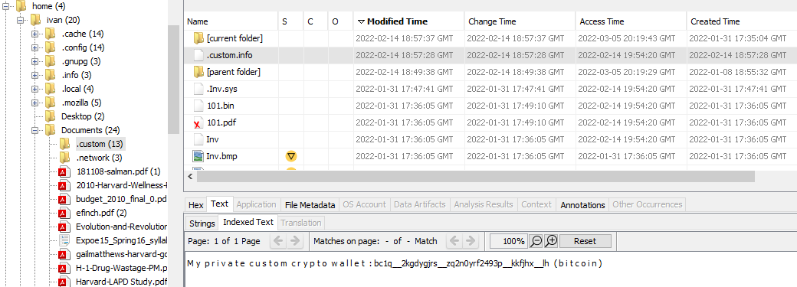

Belkasoft Capture The Flag
Intro
This was my first Forensics CTF. Although I had one semester of forensics at Uni it’s not the topic I’m most familiar with. Thus, I thought participating in this CTF could improve my skills in this aspect.
Quite unexpectedly for me, the challenge turned out to be Linux image forensics. I was expecting a Windows system image and even repeated some methodology for windows forensics, such as what to search for in Registry. However, I’m actually more familiar with Linux, so it wasn’t a big problem, just a surprise.
Setup
To analyse the image I used a mixture of tools. I was running Autopsy and Belkasoft Evidence Center X (supplied by organisers) on Windows. But I also copied some of the files to Kali virtual machine for deeper analysis. Some of the terminal tools used were exiftool, steghide and hexedit. This was actually first time I used hexedit. Previously I was using a combination of vim built-in hexa edition or just xxd to see the content. But hexedit turned out to be more suitable for the task.
Challenges
1 (100 points)
List all users of the laptop. Format: username1, username2, username 3:
Answer: ivan, stanley
This could be found in either /etc/passwd or /etc/shadow. But both of these files have a lot of default users, so to make sure I didn’t miss any I’ve checked /home directory - it had two subdirectories named ivan and stanley.
2 (100 points)
What web application was used by the boy to earn his pocket money?
Answer: x-tux-0.web.app
This one was quite easy to find in recovered browser files.
3 (100 points)
The files with partial addresses were quite easy to find in one of the user’s directories.

This was the last challenge I solved. At first, I tried the incomplete address as the flag - it seemed to me that it was missing some characters just to make it an invalid BTC address.
The funny thing here is that I’ve found a complete address for the more difficult task before I found this one. It was so simple and yet so difficult.
For some reason, I thought all data needed for this CTF was only available within the image. But the solution for this task was actually the link from the previous task - the website was working and the wallet address could be found there.
4 (500 points)
On which date does the kid’s database show the most sales for “Acapulco Gold”?
Answer: 2021-05-12
Firstly there is an email from Tux asking for “monthly sell db”.
The email also mentioned an attachment with a password list, which was useful later.
The DB file itself was located in /home/stanley/.db in one of the subdirectories.
Also, another interesting file “mycon.zip” was located there.
Looking through other files in “Stanely” directory I found a very interesting cache - the VMware cache of all drag-and-drop files. This turned out to be almost all files used in the challenge. Seems like something that was overlooked during the making of the challenge.
The database was encrypted. Usually, for such tasks I would use Hashcat, but I wanted to try the Password Kit Forensic program that was provided by the organiser.
The password for the database was vondutcemonaheem_gangsta78
It was found in the password list from the email.
To find the correct data I simply used grep on both files from the Zip, to filter on the “Acapulco Gold”:
5 (750 points)
What was the other BTC wallet of the victim, which he used to hide his “under the counter” sales from his superior?
Answer: bc1q2kgdygjrszq2n0yrf2493pkkfjhxlh
For me, this one was easier than the challenge for 100 points. This address could be found in one of the invoices. There were several invoices in one folder. All of them were PDFs changed in some way, like a wrong extension.
Analysing files didn’t reveal any information in the metadata or in the rendered PDFs.
However, two files did not open at all. .Inv.sys and 101.bin.
Upon inspecting the file in hexedit it could be seen that the beginning was zeroed.
Fixing the file revealed the BTC address.
I’ve also checked the file 101.bin in the hexedit but it looked like there were more changes to it. I expected that maybe all bits were shifted. However, I left it and moved to another challenge.
What I learned after the challenge was that the endianness was swapped for every 2 bytes. An interesting fact to remember for future CTFs.
6. Notipass (750 points)
What is the password to the boy’s notes?
Answer: !mp0rt4nTNot3
The password for this file could be found in a file named NOTHING_IMPORTANT_INFO.pdf, which obviously was important:
It contained another file with encoded text:
I used CyberChef to decode the information as it can even detect the encoding. The text in the file turned out to be base32 encoded:
Because at this point the text looked almost readable I tried rot13 and that revealed the passwords:
The file with notes could be easily found just by navigating the directory of Stanley user: Autopsy was here very helpful as it detected the file was encrypted.
7. Specudio (1000 points)
What is the “secret pin” mentioned in the notes?
Answer: flag{1257}
Although this task was given the highest number of points, for me it was one of the easiest. The name of the task gave away that it’s about an audio spectrogram.
Firstly, a pcapng file could be found in the Music directory: This was one of the first things I noticed during this challenge - why would pcapng file be in a directory called Music?
I opened the file with Wireshark and noticed that I can export files from HTTP traffic. One of the files was named vault_secret_code.wav.
I had played with spectrogram in the past so it was as simple as opening the file in Audacity and changing the view to spectrogram:
8. Ultimatum (100 points)
When did the boy receive a threat? Flag format: Epoch time
Answer: 1637948267
In the decrypted notes from task 6 there was a timestamp 1637948867. Also, it mentioned the note was written 10 minutes after receiving the threat.
The epoch time meant that the minutes needed to be converted to seconds and subtracted from the timestamp. 1637948867 - 600 gives the answer.
1637948867 minus 600 seconds (10 min) is 1637948257
9. Whois (200 points)
Who was the kidnapper? Format: Nickname, email
Answer: 0xTux, wixelig493@keagenan.com
10. Pride (250 points)
The last task was sharing the CTF on social media.